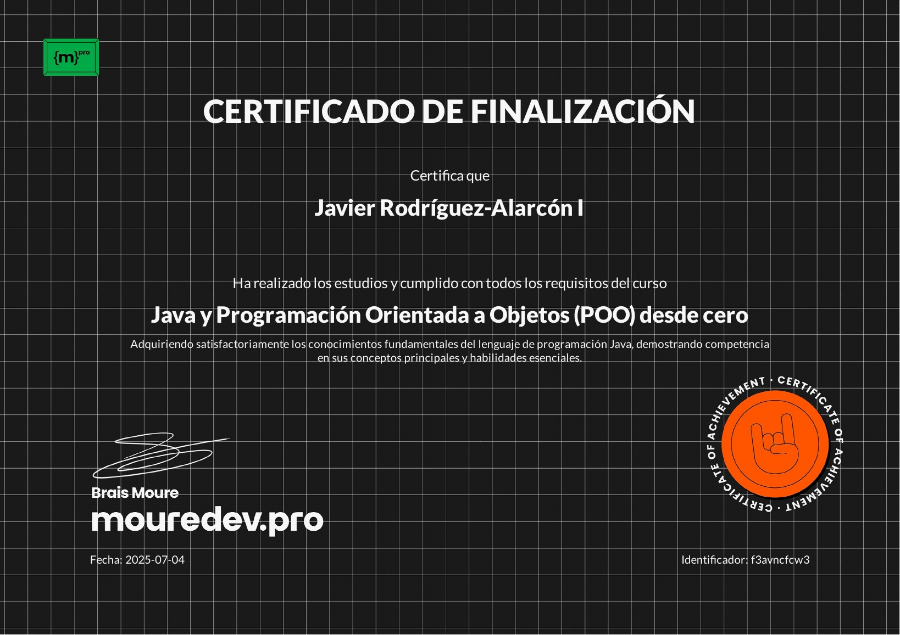

01Virtualización
Proxmox casero
Un laboratorio doméstico para aprender servidores, contenedores, almacenamiento y máquinas virtuales a base de experimentar.
↗
01 Hola, mundo
Soy Javier Rodríguez-Alarcón, estudiante de Desarrollo de Aplicaciones Multiplataforma. Me gusta entender cómo funciona todo por debajo y convertir ideas en proyectos reales.
02 Lo que estoy haciendo
Un laboratorio doméstico para aprender servidores, contenedores, almacenamiento y máquinas virtuales a base de experimentar.
Infraestructura empresarial con Active Directory, políticas de seguridad y segmentación de red enfocada en el control de acceso.
03 Coleccionando habilidades


